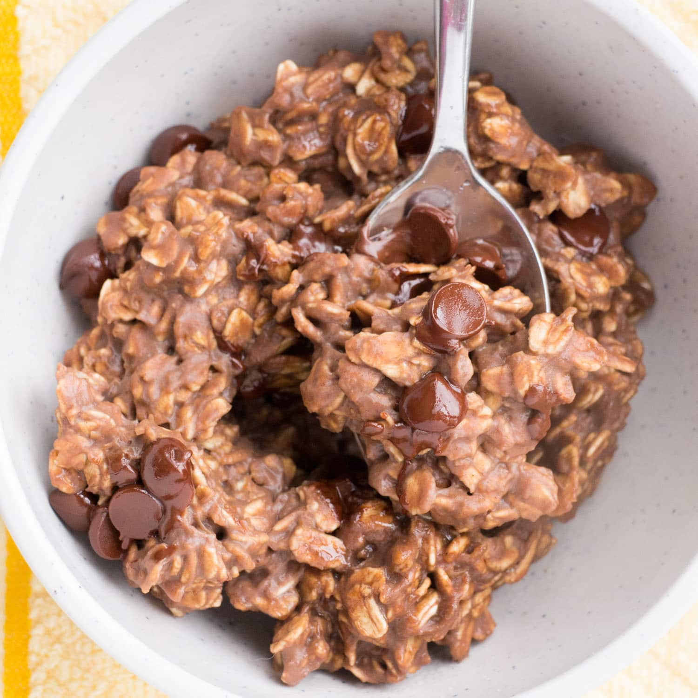

Protein Oatmeal

What is Protein Oatmeal?
Protein oatmeal can be any oatmeal recipe that is high in protein to be honest. But the recipe I'll be sharing today is specific to me. This is my own personal recipe that I made for breakfast!
My Protein Oatmeal is flavored with different kinds of chocolate. Note: as it is protein focued I weight out the ingredients in grams. This recipe gives me a good 24g of protein.
Ingredients
- Rolled Oatmeal, 44 grams
- Water, 240 grams
- Chocolate Protein Powder, 24 grams
- Semi-Sweet Chocolate Chips, 14 grams
Steps
- Add 44 grams of rolled oatmeal to a bowl
- Add 240 grams of water to bowl with oatmeal
- Place bowl in microwave and heat for 1 minute & 30 seconds
- Remove bowl from microwave and thoroughly mix 24 grams of protein in
- Evenly distribute 14 grams of semi-sweet chocolate chips over the oatmeal
- Slightly swirl semi-sweet chocolate chips into oatmeal (goal is to have a ribbon of dark chocolate, if you over swirl the choclate chips, you won't get a nice ribbon)